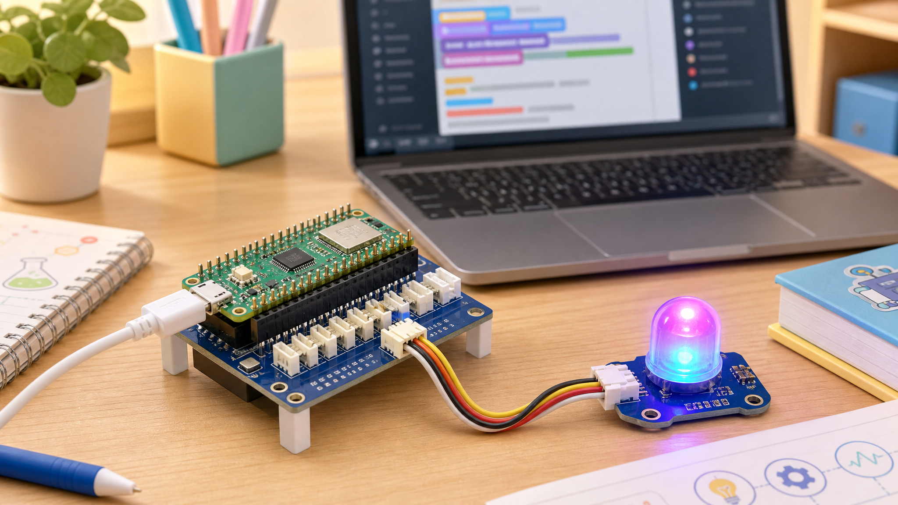

01차시 · 재미있는 손코딩
내 책상 무드등: 코드가 색을 바꾼다

이번 시간의 미션
오늘은 긴 설명보다 먼저 눈에 보이는 성공을 만듭니다. Pico 2 W에 Grove Shield를 꽂고, Grove RGB LED를 케이블로 연결한 뒤, 숫자 하나를 바꿔 LED의 반응이 달라지는 것을 확인합니다. 아직 센서도, 데이터 분석도, AI도 필요 없습니다. 먼저 “내가 바꾼 코드가 현실의 장치를 움직인다”는 감각을 잡는 것이 목표입니다.
첫 번째 목표는 피코 보드 안의 작은 LED를 깜박이게 하는 것입니다. 이 단계는 아주 단순하지만 중요합니다. 보드가 노트북과 잘 연결되었는지, 코드가 피코로 잘 전달되는지, 실행과 정지가 어떻게 이루어지는지를 가장 안전하게 확인할 수 있기 때문입니다.
두 번째 목표는 Grove RGB LED를 이용해 우리 팀의 색을 만드는 것입니다. 색은 숫자로 표현됩니다. 예를 들어 (124, 58, 237)은 보라색에 가까운 빛을 만듭니다. 오늘은 이 세 숫자를 바꾸며 색이 어떻게 변하는지 실험하고, 우리 팀 무드등의 색과 의미를 정합니다.
- 피코 내장 LED를 깜박이게 한다.
- RGB 숫자를 바꿔 무드등 색을 만든다.
- 내가 바꾼 코드와 달라진 결과를 한 문장으로 설명한다.
🧠 컴퓨팅 사고력 · 가장 작은 성공부터 시작하기
큰 작품은 한 번에 만들어지지 않습니다. 먼저 보드가 켜지는지 확인하고, 그다음 LED 하나를 켜고, 그다음 색을 바꾸고, 마지막에 우리 팀만의 의미를 붙입니다. 이렇게 작은 기능 → 확인 → 다음 기능으로 가는 방식은 앞으로 대시보드와 API 프로젝트를 만들 때도 계속 사용합니다.
연결 그림
우리는 Pico 2 W에 Grove Shield를 꽂고 Grove 케이블로 모듈을 연결합니다. 복잡한 점퍼선 배선보다 포트 이름과 케이블 방향 확인이 더 중요합니다.
준비물
- Raspberry Pi Pico 2 W
- Grove Shield for Pico
- Grove RGB LED 모듈
- Grove 케이블
- USB 케이블
- 노트북
- Thonny 또는 MicroPython 실행 환경
- 팀 활동 기록지
- 색상 실험 기록표
코드 1-1 · 내장 LED로 연결 확인하기
먼저 RGB LED를 사용하지 않고, 피코 보드 안에 있는 작은 LED를 깜박여 봅니다. 이 코드가 실행되면 피코와 노트북 연결이 성공했다는 뜻입니다.
from machine import Pin
from time import sleep
led = Pin("LED", Pin.OUT)
while True:
led.on()
sleep(0.5)
led.off()
sleep(0.5)확인해 보기
- 피코 보드의 작은 LED가 켜졌다 꺼지나요?
sleep(0.5)를sleep(0.1)로 바꾸면 깜박임이 빨라지나요?sleep(1)로 바꾸면 기다리는 느낌이 어떻게 달라지나요?
실행 결과 화면
실행 중... LED ON → OFF → ON → OFF처음 성공은 아주 작아도 괜찮습니다. 보드가 반응한다는 사실이 다음 활동의 출발점입니다.
코드 1-2 · 우리 팀 컬러 무드등 만들기
이제 Grove Shield에 Grove 케이블로 연결한 Grove RGB LED 모듈로 색을 표현합니다. 아래 코드는 수업용 예시 구조입니다. 실제 Grove RGB LED 라이브러리와 포트 이름은 학교 키트 예제에 맞추되, 핵심은 RGB 숫자를 바꾸어 색을 정한다는 점입니다.
from time import sleep
# 예시: Grove RGB LED 모듈을 D16 포트에 연결했다고 가정합니다.
# 실제 수업 키트의 Grove RGB LED 예제 코드에 맞게 객체 생성 부분은 조정합니다.
rgb_led = GroveRgbLed(port="D16")
# 우리 팀 컬러를 RGB 숫자로 정합니다.
team_color = (124, 58, 237) # 보라색 계열
while True:
rgb_led.set_color(team_color)
sleep(1)RGB 숫자 실험
아래 조절기를 움직여 우리 팀 색을 먼저 만들어 보세요. 마음에 드는 색이 나오면 RGB 값을 코드의 team_color에 넣습니다.
team_color = (124, 58, 237)검증 체크리스트
- 코드 1-1에서 내장 LED가 깜박였나요?
- 기다리는 시간을 바꾸면 깜박이는 속도가 달라졌나요?
- RGB 숫자를 바꾸면 LED 색이 달라졌나요?
- 내가 바꾼 줄을 친구에게 설명할 수 있나요?
- 아직 AI 없이, 내가 직접 실행하고 관찰한 결과를 기록했나요?
자주 막히는 지점
LED가 안 켜져요
USB 포트와 실행 대상이 Pico로 선택되어 있는지 확인하세요. 코드 1-1 내장 LED부터 다시 확인합니다.
RGB LED 색이 안 바뀌어요
DATA 포트 번호가 코드와 같은지 확인하세요. Pin(15)의 숫자는 실제 연결 포트에 맞게 바뀔 수 있습니다.
색이 예상과 달라요
모듈에 따라 RGB 순서가 다를 수 있습니다. 빨강, 초록, 파랑을 하나씩 켜 보며 순서를 확인하세요.
활동 기록
| 우리 팀 컬러 RGB | 예: (124, 58, 237) |
|---|---|
| 색 이름 | 예: 집중 보라 |
| 색의 의미 | 예: 차분하지만 에너지 있는 팀 분위기 |
| 내가 바꾼 코드 | 예: team_color 숫자 3개 |
| 실행 결과 | 예: LED가 보라색으로 켜졌다. |
| 다음에 바꾸고 싶은 것 | 예: 버튼을 누르면 색이 바뀌게 만들고 싶다. |
리터러시 포인트
큰 작품을 만들기 전에 LED 하나가 반응하는지 확인합니다.
값을 바꾸기 전에 결과를 예상하고, 실제 결과와 비교합니다.
색도 숫자로 표현할 수 있습니다. 숫자는 나중에 데이터가 됩니다.
팀마다 색의 의미를 정하고 친구에게 설명합니다.
연습문제
sleep(0.5)를sleep(0.1),sleep(1)로 바꾸고 차이를 적어 보세요.- RGB 값 세 개 중 하나만 바꾸면 색이 어떻게 달라지는지 실험해 보세요.
- 우리 팀 컬러를 정하고, 그 색을 고른 이유를 한 문장으로 적어 보세요.
- 도전: LED가 켜졌다 꺼졌다 하면서 두 가지 색을 번갈아 보여주도록 코드를 바꿔 보세요.
다음 차시로
오늘은 코드가 색을 바꾸는 경험을 했습니다. 다음 시간에는 버튼을 누르면 색이 바뀌는 감정등을 만듭니다. 출력만 있는 장치에서 사용자 입력에 반응하는 장치로 한 단계 성장합니다.